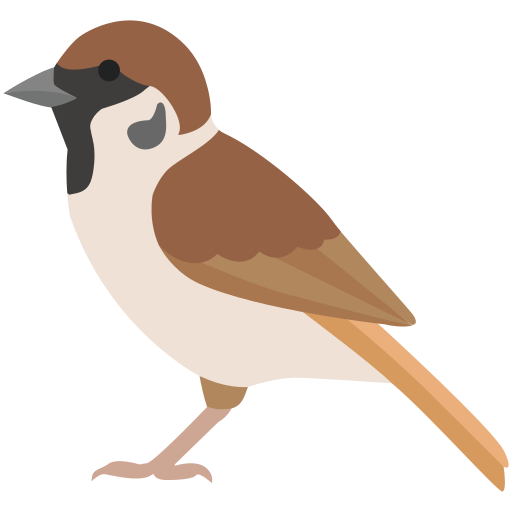

About Me
I am a researcher interested in bird ecology, biodiversity change, and emerging environmental pollutants such as microplastics. My work integrates macroecology, trait-based ecology, and phylogenetic approaches to understand vulnerability patterns across species.
My research focuses on global synthesis, ecological forecasting, and identifying drivers of biodiversity change in the Anthropocene.
Currently, I am a Postdoctoral Researcher at the Institute of Urban Environment, Chinese Academy of Sciences, where my work explores ecological responses to environmental change and emerging pollutants.